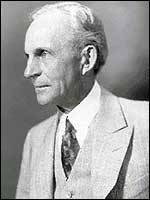

Henry Ford (1863-1947)

Dünyaca ünlü Ford fabrikalarýnýn kurucusu ve sahibidir. Amerika’ya yerleþmiþ Ýrlandalý çiftçi bir ailenin çocuðudur. Küçük yaþtan itibaren makinelere ilgi duymuþ ve yaptýðý motorlarýyla dünyada ilkleri gerçekleþtirmiþtir. Çiftçi bir ailenin çocuðu olarak dünyaya gelmiþken, dünyanýn dört bir yanýndaki fabrika ve þirketlerin sahibi olarak ölmüþtür. Her iki dünya savaþýnda da savaþ karþýtý bir tavýr takýnmýþtýr. Daha az kazanç, seri üretim ve daha çok satýþ stratejisiyle þirketini dünya piyasalarýnýn büyük devi haline getirmiþtir. Risale-i Nur’da, talebelerin sadakatlerine dikkat çekmek için Ford’un servetine atýfta bulunulmuþtur.Ford, 1863 yýlýnda Mischigan’de doðdu. Ýrlanda asýllý olan, daha sonra Amerika’ya yerleþmiþ olan çiftçi William’ýn altý çocuðunun en büyüðüydü. Henüz on iki yaþýnda iken annesi öldü. Küçük yaþlardan itibaren çiftçilikten çok makinelere ilgi duydu. Çoðu zaman komþu ve tanýdýklarýnýn saatlerini tamir etmek suretiyle harçlýðýný çýkardý. On altý yaþýnda iken, babasýnýn çiftliðinden ayrýlarak Detroit’te bulunan þirkette çýrak olarak çalýþmaya baþladý. Saat tamiri konusunda epey uzmanlaþtý. Bir ara büyük çapta ve uygun fiyata saat üretme düþüncesine kapýldýysa da bundan vazgeçti. Bir süre çalýþtýktan sonra tekrar çitliðine döndü.
Ford, döndükten sonra kurmuþ olduðu atölyesinde makinelere olan ilgisini devam ettirerek çalýþmalarýný sürdürdü. On beþ yaþýnda iken ilk buharlý makineyi yaptý. 1882 yýlýnda makine montörü olarak girdiði fabrikada daimi statüde çalýþmaya baþladý. Birkaç yýl çalýþtýktan sonra 1887 yýlýnda bir çiftçinin kýzý ile evlendi ve bu evlilikten bir çocuk sahibi oldu. Ardýndan Detroit’e dönerek 1891 yýlýnda bir ýþýklandýrma þirketinde (Edison Illuminating Company) mühendis olarak çalýþmaya baþladý. Fabrikadaki çalýþmasýndan arta kalan zamanlarýnda otomobil üretimi üzerinde çalýþtý ve 1893 yýlýnda evinin mutfaðýnda benzinle çalýþan ilk motoru yaptý. Üç yýl sonrasýnda da ilk otomobilini yaptý.
Henry Ford, 1893 yýlýnda “Ford Motor” adlý þirketini kurdu. Bu þirketin yaklaþýk dörtte bir hissesi kendisine aitti. Ayný yýl içinde ürettikleri motoru kendi ülkesinde sattý. Bir yýl sonra ise yurt dýþýna da açýlarak ürettiði otomobilleri ihraç etmeye baþladý. Hedefi, sýradan insanlarýn alýp ihtiyaçlarýný karþýlayabileceði ve fazla lüks olmayan bir otomobil üretmekti. 1908 yýlýnda ürettiði ve “T” modeli adýný verdikleri otomobil ile dünya çapýnda bir üne kavuþtu. Gördükleri büyük talep neticesinde satýþ rekorlarý kýrdý. On dokuz yýl devam ettikleri bu üretim sonunda on beþ milyondan fazla satýþ gerçekleþtirdi.
Ýlk ürettikleri arabayý 850 dolara satarken, seri üretime geçilmesi ve maliyetlerin düþürülmesi neticesinde bu fiyat 265 dolara kadar düþtü. Kar oranýný düþük tutarak daha fazla satýþ stratejisi satýþlarýný katladý. Ayrýca hareketli montaj bandý sistemiyle yapýlan hýzlý üretim de fiyat ve maliyetin düþmesinde çok etkili oldu. Fabrikada çalýþan iþçiler bulunduklarý yerde sabit bir þekilde dururken, hareketli bant üzerinde önlerine gelen parçalarý birleþtirerek çalýþtýlar. Ucuz araba, talebi müthiþ þekilde arttýrdý. Bu arada çitlikler arasýnda yollarýn yapýlmasý ulaþýmý kolaylaþtýrdýðý gibi, Amerika’da hýzlý bir þekilde kentleþme dikkat çekti.
Ford, otomobil üretmenin yanýnda tarýmda istifade edilen taþýt üretimine baþlayarak traktör üretmeye baþladý. Daha önce þirketin dörtte bir hissesi kendisine ait iken tüm hisseleri satýn alarak tamamen sahip oldu. Ýþçilerin daha az saat çalýþmalarý ve yüksek ücret almalarýný savunup kabul etmekle birlikte sendikalaþma giriþimleri ve bu tür eylemlere izin vermedi. 1930 yýlýnda Dünya genelinde meydana gelen bunalýmýn etkisiyle iþçi ücretlerini kýsma yoluna gitti. Ýþçilerin sendikalaþmalarýný engellemek için sert tedbirlere baþ vurdu. Ancak, sonunda Otomobil Ýþçileri Sendikasý ile sözleþme imzalamak zorunda kaldý.
Henry Ford’un uyguladýðý yeni teknik ve yöntemler bir çok iþletme tarafýndan benimsendi. Þirket aðlarý giderek geniþledi. Ýtalya, Almanya, Belçika ve Ýngiltere’de fabrikalar kurdu. Bunlarýn yönetimi için Ýngiltere’de kurulan fabrika merkez olarak kabul edilip buradan yönetildi. 1932 yýlýnda Avrupa pazarý hedef olarak seçilip yeni bir model üretildi. Birinci Dünya Savaþý’nda olduðu gibi Ýkinci Dünya Savaþý sýrasýnda da üretimini savaþýn ihtiyaçlarýný göz önünde bulundurarak tasarladý. Bu ihtiyaçlara göre üretimi gerçekleþtirdi. Her iki savaþta da barýþý savunup savaþ karþýtý politika izledi. Savaþýn sona ermesi ve barýþýn saðlanabilmesi için 1915 yýlýnda Avrupa’ya gidip barýþ için birlik kurmaya çalýþtýysa da baþarýlý olamadý. Ýkinci Dünya Savaþý öncesinde de savaþ karþýtý oldu. Bu amaçla 1936 yýlýnda Ford Vakfý’ný kurdu.
1943 yýlýnda þirketin baþýnda bulundurduðu oðlunun ölümü üzerine yeniden yönetimi üstlendi. Ýkinci Dünya Savaþý sonunda çok hýzlý bir þekilde üretim deðiþikliðine gitti. Çünkü, savaþýn sona ermesi ile birlikte savaþ amaçlý sipariþlerin büyük bir kýsmý iptal edildi. Bu durum devam ede gelen üretimin deðiþmesini zorunlu kýldý ve bu geçiþ çok kýsa bir sürede gerçekleþtirildi. 1945 yýlýnda daha önceden faaliyete soktuðu üretim bandýndan ilk binek otomobil üretimini gerçekleþtirdi. Kýsa bir süre sonra þirket yönetimini kendisi ile ayný adý taþýyan torunu Henry Ford’a devretti. Dünya çapýnda büyük bir þirketin kurucusu ve sahibi olan Ford 7 Nisan 1947 yýlýnda öldü.
Henry Ford, kurduðu büyük þirketini Amerika’nýn en güçlü ve tek baðýmsýz kuruluþu haline getirdi. Piyasaya sürdüðü T modelinden on beþ milyon üretip sattý. Seri üretime geçildikten sonra, yedek parça üretimi hariç yýlda yetmiþ beþ bin otomobil seviyesine yükseldi. Ticari yayýlmanýn aracý olarak dýþ satýmý hedefleyen sanayicilerin ilklerinden oldu. 1910 yýlýndan sonra sadece Ýngiltere’ye üç binden fazla otomobil sattý. 1925 yýlýnda kurduðu büyük bir ticaret filosu ile daha da büyüdü. Kendi çalýþanlarýnýn kazanca ortak olmasý ilkesini 1914 yýlýndan itibaren uygulamaya soktu. Kendi çalýþanlarýnýn da otomobil sahibi olmalarýný saðlamak için uzun vadeli taksitlerle araba satmaya baþladý.
1947 yýlýnda ölen Ford, daha 1908 yýlýnda günde yüz otomobil üreten fabrika, demir yolu iþletmesi, on altý kömür madeni, çok geniþ alana yayýlan orman, zengin demir ve bakýr yataklarýna ulaþmak için kurduðu büyük filoyu miras olarak býraktý. Ulaþtýðý servetle dünyanýn önde gelen insanlarý arasýnda yer aldý. 1918 yýlýnda Amerika’da satýlan arabalarýn yarýsý Ford markasý taþýmaktaydý. Günümüzde ise Ford fabrikalarý, laboratuarlar, yüzbinlece çalýþaný, altý kýta ve on sekiz ülkede kurulu bulunan otobomobil fabrikalarý ile faaliyetleri devam etmektedir.
Risale-i Nur’da Ford ismi zikredilirken, iman hizmetini her þeyin üstünde tutan Nur talebelerine dikkat çekilmektedir. Ankara Üniversitesi’nde Zübeyir Gündüzalp tarafýndan verilen ve Risale-i Nur’a “Konferans” baþlýðý altýnda ilave edilen metinde yer alan, “Risale-i Nur’a hizmet eden birisine denilse: ‘Risale-i Nur yerine þu kitaplarý kopya et de, Ford’un servetini sana vereyim.’ O, Risale-i Nur satýrlarýndan kaleminin ucunu bile kaldýrmadan þöyle cevap verir: ’Dünya servet ve saltanatýnýn hepsini verseniz kabul etmem.’” cümlesiyle Nur Talebelerinin Risale-i Nur hizmetine verdikleri önem vurgulanmaktadýr. (Þualar, 1998, s. 383; Gençlik Rehberi, s. 224).